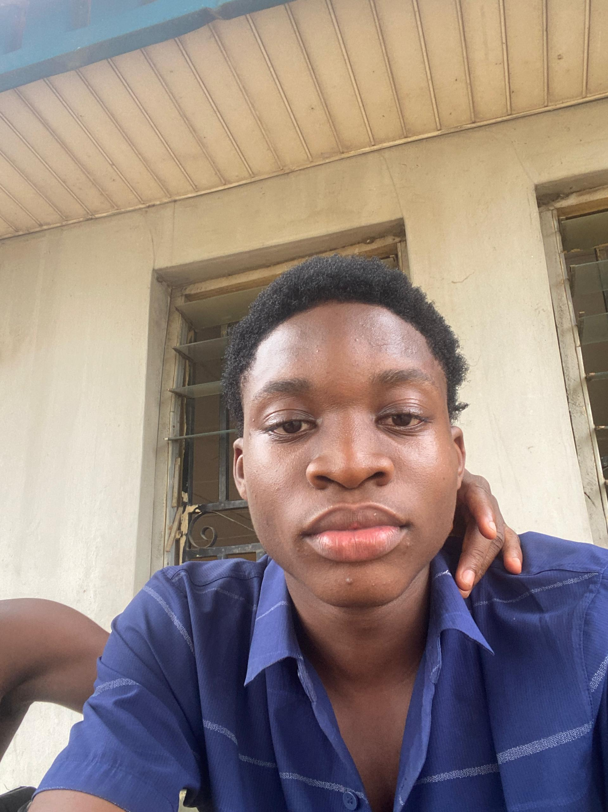
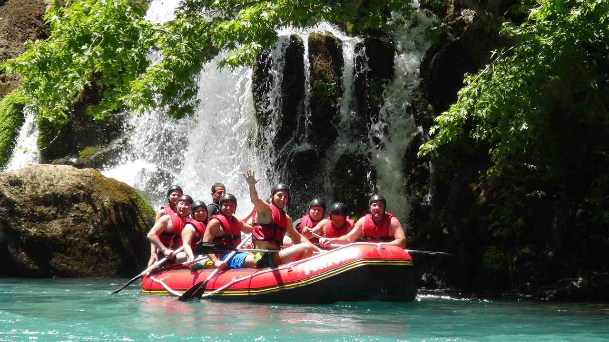
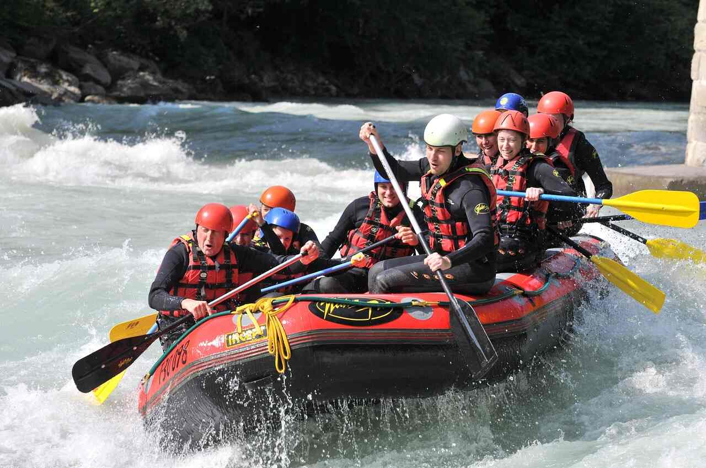
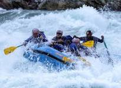
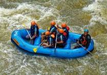

At Dry Oar Rafting, our mission is to bring excitement, adventure, and unforgettable memories through the power of white water rafting.
About Me
Hello! My name is Damilare Bamisile, and I am studying Accounting at LASUSTECH. This is my WDD 130 course homepage.
My Country
I live in Nigeria. It is a beautiful country with rich culture and history.
Course Project
This project is a White Water Rafting website that demonstrates HTML and CSS skills.


Dry Oar Rafting
Our History
Founded with a passion for the river, Dry Oar Rafting has been guiding adventurers for many years. Our story is one of courage, fun, and trust in nature.
Adventure Awaits You!
Join our experienced team and explore thrilling rapids while enjoying the beauty of nature. Your adventure starts here!